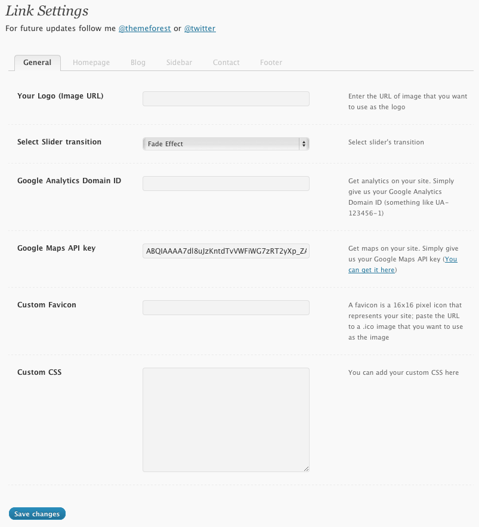
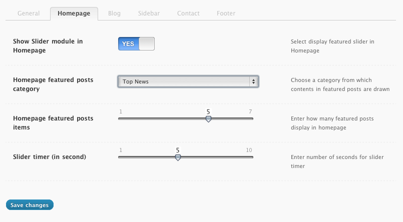
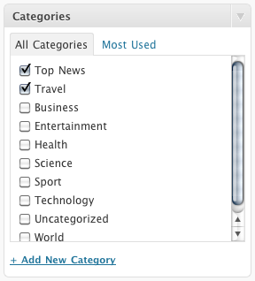
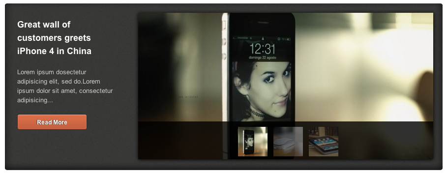
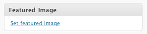
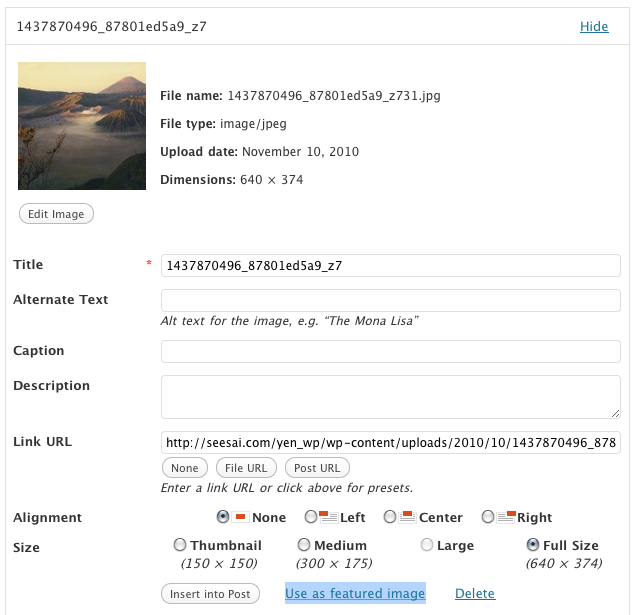
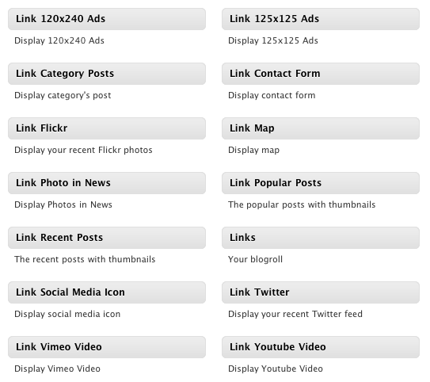
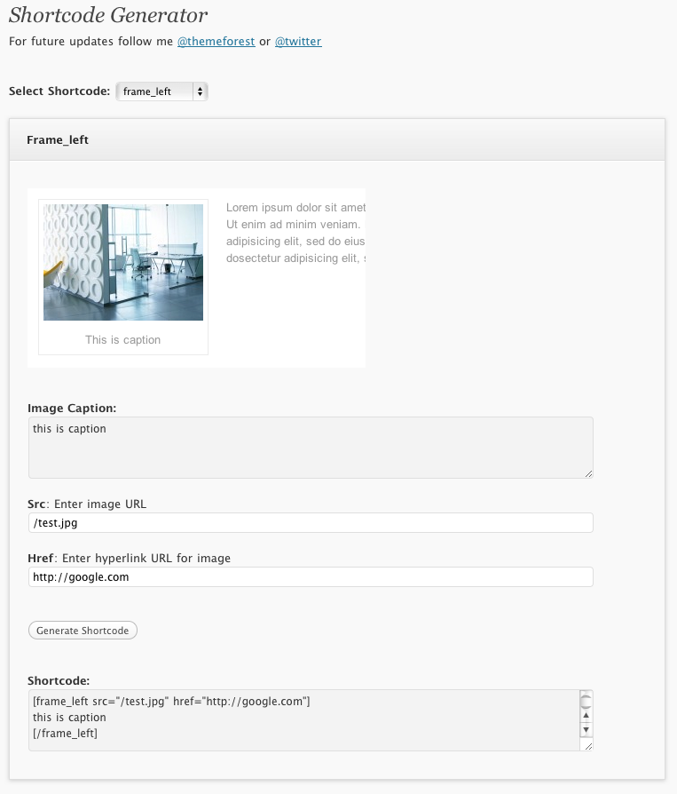
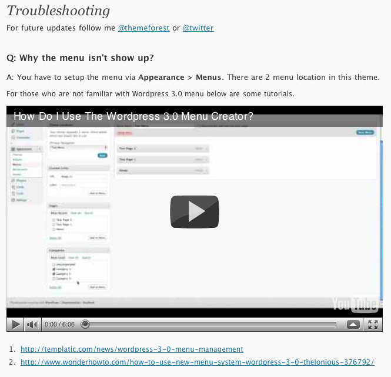

Created: 17/12/2010
By: Peerapong Pulpipatnan
Thank you for purchasing my theme. If you have any questions that are beyond the scope of this help file, please feel free to email via my user page contact form here. Thanks so much!
In order to begin installing Link theme. You need the latest version of Wordpress. Here is the download URL. Once you downloaded and set it up, You are ready to go.
Upon downloading the package, you will have an "Link" folder inside the theme package. Upload this folder to your themes folder at: your WordPress installation root directory /wp-content/themes
Log into WordPress administration and click on the Appearance >> Themes tab. After that is done, activate the theme as you would activate any other theme.
Note: You have to set /cache folder of Link writable (chmod 777)Go to Posts > Categories and create some sample categories for your site. These categories will be added to theme's menu. Below is the instruction.
Link has 2 menus locations "Top Menu" is the menu on the top of page and "Main Menu" is the menu align below the logo.
Go to Appearance > Menus then click "Create Menu". Add items to your menu and select Theme location. In live preview I created pages menu for "Top Menu" and categories menu for "Primary Menu"
For those who are not familiar with Wordpress 3.0 menu below are some tutorials.
Go to Appearance > Menus then on the left of screen. You will see "Custom Link" box. Enter your URL and name "Home" then add to menu. Then on the right, you will see "Home" item show up. Enter its title attribute "Home".
Upon activating the theme, from your WordPress admin panel, you will notice the "Link" options tab at the bottom of your WordPress admin panel menu options. Click on it. You will open the admin panel of Link.
You'll see that your current theme options page is broken up into 6 sections "General" "Homepage" "Blog" "Sidebar" "Contact" "Footer" Clicking on any of these option names will popup that options content.

The homepage has 3 pre-defined widgets "Home Center Left Sidebar", "Home Center Right Sidebar" and "Home Right Sidebar".



When you add a new post, on Link post information box. Select "Yes" for "Is this a featured post?


When you add a new post, on Featured Image. Click on "Set featured Image". Once you uploaded image then click on "Use as featured image"
However the homepage sidebar is support all Wordpress 3.0 widgets. I created 13 custom widgets to make your website more interesting.

You can also add your sidebar via Admin panel.
To add content to sidebar simple go to Appearance > Widgets and drag item into certain sidebar.
You can also add shortcode to sidebar widget, simply select "Text" type for your widget and enter shortcode to it.
Link has 2 page style, "Full width" and "Right sidebar. To select page style. Go to add new page. Fill enter the title field and description. Go to Link Page Options then select page style box.
Link also come with built-in plugin called "Shortcode Generator" which will help you create theme's shortcode from GUI. Simply click on "Shortcode Generator" once you activate the theme.

Select shortcode type you want to add then enter its contents. Click on "Generate Shortcode" and copy all code inside Shortcode box. Go to your post or page paste the code to its content.
Link also come with built-in plugin called "Troubleshooting" which will help you solve common issues that might arise from different server settings.

I'm using four CSS files in this theme. The first file contains all of the specific stylings for the page. The file is separated into sections using:
/* CSS Reset */ some code /* Global layout */ some code /* Input layout */ some code
The second file is a styling for jQuery UI element.
The third file is a styling for tooltips.
The fourth file is a styling for modal window.
If you would like to edit a specific section of the site, simply find the appropriate label in the CSS file, and then scroll down until you find the appropriate style that needs to be edited.
This theme imports ten Javascript files.
I've included one psd with this theme and it is a main layout of template.
I've used the following script, images, icons or other files as listed.
Once again, thank you so much for purchasing this theme. As I said at the beginning, I'd be glad to help you if you have any questions relating to this theme. No guarantees, but I'll do my best to assist. If you have a more general question relating to the themes on ThemeForest, you might consider visiting the forums and asking your question in the "Item Discussion" section.
Peerapong Pulpipatnan